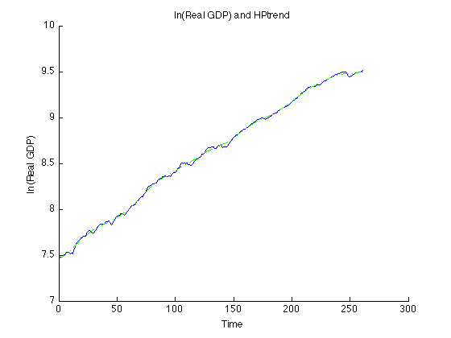
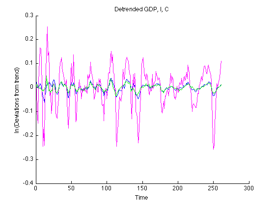

clear all;
clc;
rbcdata= importdata('QuarterlyRBC_Quarterly.txt');
rbcmat=[rbcdata.data(:,1), rbcdata.data(:,2), rbcdata.data(:,3)];
rbcmat=log(rbcmat);
[yt,yd]=hptrend(rbcmat,1600);
figure
hold on
plot(rbcmat(:,1),'b')
plot(yt(:,1),'g-.')
title('ln(Real GDP) and HPtrend')
xlabel('Time')
ylabel('ln(Real GDP)')
hold off
gdp_dtr = yd(:,1);
i_dtr = yd(:,2);
c_dtr = yd(:,3);
sdY = sqrt(var(gdp_dtr));
sdI = sqrt(var(i_dtr));
sdC = sqrt(var(c_dtr));
figure
hold on
plot(gdp_dtr,'b')
plot(i_dtr,'m')
plot(c_dtr,'g')
title('Detrended GDP, I, C')
xlabel('Time')
ylabel('ln(Deviations from trend)')
hold off
corrs=corr(yd);
corrs=corrs(1,:);
fprintf('Correlation between GDP-GDP and GDP-Investment and GDP-Consumption, respectively are:')
corrs
fprintf('---------------------------------------------------\n')
gdp_dtrl = lagmatrix(gdp_dtr,1);
gdp_dtrl = gdp_dtrl(2:length(gdp_dtr));
gdp_dtr = gdp_dtr(2:length(gdp_dtr));
c_dtrl = lagmatrix(c_dtr,1);
c_dtrl = c_dtrl(2:length(c_dtr));
c_dtr = c_dtr(2:length(c_dtr));
i_dtrl = lagmatrix(i_dtr,1);
i_dtrl = i_dtrl(2:length(i_dtr));
i_dtr = i_dtr(2:length(i_dtr));
fprintf('Autocorrelation for GDP is:')
acorrg=corrcoef(gdp_dtr,gdp_dtrl);
acorrg=acorrg(2,1)
fprintf('Autocorrelation for Investment is:')
acorri=corrcoef(i_dtr,i_dtrl);
acorri=acorri(2,1)
fprintf('Autocorrelation for Consumption is:')
acorrc=corrcoef(c_dtr,c_dtrl);
acorrc=acorrc(2,1)
fprintf('---------------------------------------------------\n')
fprintf('Ratio of the standard deviations for GDP/Investment is:')
sdI/sdY
fprintf('Ratio of the standard deviations for GDP/Consumption is:')
sdC/sdY
Correlation between GDP-GDP and GDP-Investment and GDP-Consumption, respectively are:
corrs =
1.0000 0.8473 0.7837
---------------------------------------------------
Autocorrelation for GDP is:
acorrg =
0.8476
Autocorrelation for Investment is:
acorri =
0.7949
Autocorrelation for Consumption is:
acorrc =
0.8160
---------------------------------------------------
Ratio of the standard deviations for GDP/Investment is:
ans =
4.8996
Ratio of the standard deviations for GDP/Consumption is:
ans =
0.7664
 